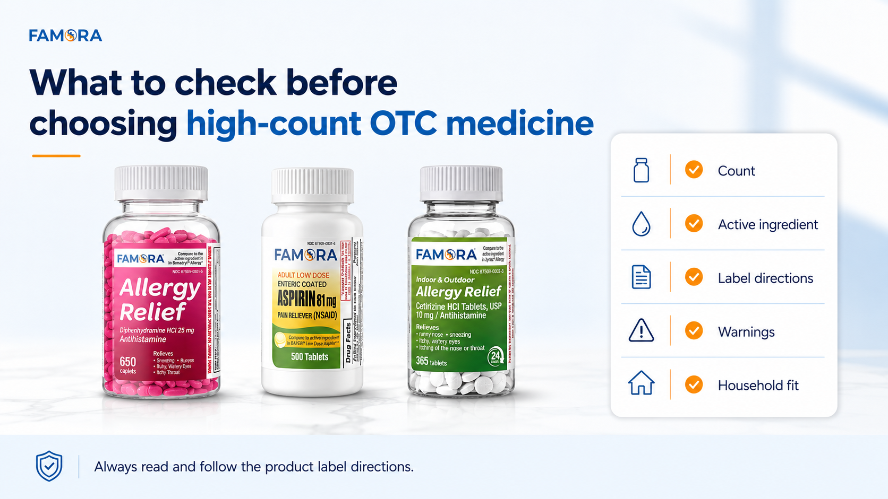

<title>Why High-Count OTC Medicine Belongs in a Prepared Home Medicine Cabinet — Famora</title>
<meta name="viewport" content="width=device-width, initial-scale=1" />
<!-- Google tag (gtag.js) -->
<script async src="https://www.googletagmanager.com/gtag/js?id=G-DPF7DVJCQ8"></script>
<script>
  window.dataLayer = window.dataLayer || [];
  function gtag(){dataLayer.push(arguments);}
  gtag('js', new Date());
  gtag('config', 'G-DPF7DVJCQ8');
</script>
<link rel="preconnect" href="https://fonts.googleapis.com">
<link rel="preconnect" href="https://fonts.gstatic.com" crossorigin>
<link href="https://fonts.googleapis.com/css2?family=Montserrat:wght@400;700&family=Open+Sans:wght@400;600;700&display=swap" rel="stylesheet">
<style>
  :root{
    --blue:#3786c6; --blue-deep:#1f4d73; --blue-tint:#eaf2f9;
    --orange:#fca311; --orange-deep:#e08e0a;
    --neutral:#f3f1ed; --paper:#fdfcfa; --white:#ffffff;
    --ink:#171a1d; --ink-soft:#565f66; --line:#e5e0d3;
    --display:'Montserrat','Segoe UI Semibold','Segoe UI',system-ui,sans-serif;
    --body:'Open Sans','Segoe UI',system-ui,sans-serif;
  }
  *{box-sizing:border-box;}
  html{scroll-behavior:smooth;}
  body{margin:0; background:var(--paper); color:var(--ink); font-family:var(--body); line-height:1.6; -webkit-font-smoothing:antialiased;}
  img{max-width:100%; display:block;}
  a{color:inherit;}
  .wrap{max-width:1180px; margin:0 auto; padding:0 28px;}
  h1,h2,h3{font-family:var(--display); font-weight:700; line-height:1.25; margin:0 0 14px; letter-spacing:-0.01em;}
  p{margin:0 0 16px; color:var(--ink-soft); max-width:70ch;}
  section{padding:72px 0;}

  .eyebrow{
    display:inline-flex; align-items:center; gap:9px; font-family:var(--display); font-weight:700;
    font-size:0.72rem; letter-spacing:0.13em; text-transform:uppercase; color:var(--blue-deep); margin-bottom:14px;
  }
  .eyebrow::before{content:""; width:18px; height:2px; background:var(--orange); display:inline-block; border-radius:2px;}

  .btn{
    display:inline-flex; align-items:center; gap:8px; font-family:var(--display); font-weight:700; font-size:0.9rem;
    padding:14px 26px; border-radius:9px; text-decoration:none; border:1.5px solid transparent; cursor:pointer;
    transition:transform .18s ease, box-shadow .18s ease, background .18s ease;
  }
  .btn-primary{background:var(--orange); color:#2b1a00;}
  .btn-primary:hover{background:var(--orange-deep); transform:translateY(-2px);}
  .btn-outline{border-color:var(--blue); color:var(--blue-deep); background:transparent;}
  .btn-outline:hover{background:var(--blue-tint); transform:translateY(-2px);}
  .cta-row{display:flex; gap:14px; flex-wrap:wrap; margin-top:8px;}

  /* HEADER (matches blog.html) */
  header.site{position:sticky; top:0; z-index:50; background:rgba(253,252,250,.94); backdrop-filter:blur(6px); border-bottom:1px solid var(--line);}
  .header-row{display:flex; align-items:center; justify-content:space-between; padding:16px 0; gap:24px;}
  .logo{display:flex; align-items:center; gap:2px; text-decoration:none;}
  .logo img{height:48px; width:auto; display:block;}
  nav.anchors{display:flex; gap:28px; align-items:center;}
  nav.anchors a{font-family:var(--display); font-weight:700; font-size:0.85rem; color:var(--ink-soft); text-decoration:none;}
  nav.anchors a:hover{color:var(--blue-deep);}
  nav.anchors a.current{color:var(--blue-deep);}
  .header-cta{display:flex; align-items:center; gap:14px;}
  @media (max-width:860px){ nav.anchors{display:none;} }

  /* ARTICLE HERO */
  .article-hero{padding:56px 0 40px; border-bottom:1px solid var(--line);}
  .article-hero .wrap{max-width:760px;}
  .article-hero h1{font-size:clamp(1.9rem,1.3rem+2.2vw,2.5rem);}
  .article-meta{font-family:var(--display); font-weight:700; font-size:0.82rem; color:var(--ink-soft); margin-top:2px;}
  .back-link{font-family:var(--display); font-weight:700; font-size:0.85rem; color:var(--blue-deep); text-decoration:none; display:inline-block; margin-bottom:18px;}
  .back-link:hover{text-decoration:underline;}

  /* ARTICLE BODY */
  .article-body{padding:48px 0 8px;}
  .article-body .wrap{max-width:760px;}
  .article-body h2{font-size:1.4rem; color:var(--ink); margin-top:8px;}
  .article-body p{max-width:70ch;}
  .article-body a{color:var(--blue-deep); text-decoration:underline;}
  .article-list{list-style:none; margin:0 0 20px; padding:0;}
  .article-list li{position:relative; padding-left:24px; margin-bottom:16px; font-size:0.98rem; color:var(--ink-soft);}
  .article-list li::before{content:""; position:absolute; left:0; top:8px; width:8px; height:8px; border-radius:50%; background:var(--orange);}
  .article-list li strong{color:var(--ink); font-family:var(--display); font-weight:700;}
  .article-list.compact li{margin-bottom:8px;}
  .article-image{border-radius:16px; overflow:hidden; border:1px solid var(--line); box-shadow:0 16px 30px -22px rgba(23,26,29,.3); margin:32px 0;}
  .article-image img{width:100%; display:block;}

  /* FAQ (matches blog.html accordion) */
  .article-faq{border-top:1px solid var(--line); margin-top:24px; padding-top:8px;}
  .fm-faq-list{max-width:100%; margin:0; text-align:left;}
  .fm-faq-item{border-bottom:1px solid var(--line);}
  .fm-faq-q{
    width:100%; text-align:left; background:none; border:none; cursor:pointer;
    display:flex; align-items:center; justify-content:space-between; gap:16px;
    padding:18px 4px; font-family:'Montserrat',sans-serif; font-weight:700; font-size:1rem;
    color:var(--ink);
  }
  .fm-faq-q .fm-faq-icon{ flex-shrink:0; width:22px; height:22px; position:relative; }
  .fm-faq-q .fm-faq-icon::before, .fm-faq-q .fm-faq-icon::after{
    content:""; position:absolute; background:var(--blue); border-radius:2px;
    transition:transform .2s ease, opacity .2s ease;
  }
  .fm-faq-q .fm-faq-icon::before{ width:14px; height:2px; top:10px; left:4px; }
  .fm-faq-q .fm-faq-icon::after{ width:2px; height:14px; top:4px; left:10px; }
  .fm-faq-item.fm-open .fm-faq-icon::after{ transform:rotate(90deg); opacity:0; }
  .fm-faq-a{ max-height:0; overflow:hidden; transition:max-height .25s ease; }
  .fm-faq-a p{ font-size:0.95rem; line-height:1.65; padding:0 4px 20px; margin:0; }

  /* DISCLAIMER */
  .safety-box{background:var(--white); border:1px solid var(--line); border-left:4px solid var(--orange); border-radius:12px; padding:22px 26px; max-width:760px; margin:8px 0 0;}
  .safety-box p{margin:0; font-size:0.9rem;}

  /* FINAL CTA */
  .final-box{background:linear-gradient(135deg, var(--blue) 0%, var(--blue-deep) 100%); border-radius:26px; padding:64px 44px; text-align:center; color:#fff;}
  .final-box h2{color:#fff; max-width:26ch; margin:0 auto 14px;}
  .final-box p{color:#dcebf6; max-width:52ch; margin:0 auto 28px;}

  /* FOOTER (matches blog.html) */
  footer.site{background:var(--ink); color:#c7ccd1; padding:48px 0 28px;}
  .footer-grid{display:flex; justify-content:space-between; gap:32px; flex-wrap:wrap; padding-bottom:26px; border-bottom:1px solid #33383d;}
  .footer-logo img{height:40px; width:auto; display:block;}
  .footer-links{display:flex; gap:26px; flex-wrap:wrap;}
  .footer-links a{font-size:0.88rem; text-decoration:none; color:#c7ccd1;}
  .footer-links a:hover{color:var(--orange);}
  .footer-bottom{display:flex; justify-content:space-between; gap:16px; flex-wrap:wrap; padding-top:22px; font-size:0.78rem; color:#8a9096;}

  @media (max-width:640px){
    section{padding:48px 0;}
    .final-box{padding:44px 24px;}
    .wrap{padding:0 20px;}
  }
</style>

<header class="site">
  <div class="wrap header-row">
    <a class="logo" href="index.html"></a>
    <nav class="anchors">
      <a href="index.html#products" data-ga="product_section" data-cta-location="nav">Products</a>
      <a href="index.html#why-famora">Why Famora</a>
      <a href="blog.html" class="current">Blog</a>
      <a href="index.html#faq">FAQ</a>
    </nav>
    <div class="header-cta">
      <a class="btn btn-primary" href="https://www.amazon.com/stores/Famora/page/81160919-0D2F-41D2-94BA-65BB7147068E?lp_asin=B0GWS1F7XH&ref_=ast_bln" target="_blank" rel="noopener" data-ga="storefront" data-cta-location="header">Shop Amazon</a>
    </div>
  </div>
</header>

<main>

  <!-- ARTICLE HERO -->
  <section class="article-hero">
    <div class="wrap">
      <a class="back-link" href="blog.html">&larr; Back to Blog</a>
      <div class="eyebrow">Household Preparedness</div>
      <h1>Why High-Count OTC Medicine Belongs in a Prepared Home Medicine Cabinet</h1>
      <p class="article-meta">Famora &middot; August 20, 2026</p>
    </div>
  </section>

  <!-- ARTICLE BODY -->
  <section class="article-body">
    <div class="wrap">

      <p>Most households do not think about their medicine cabinet until something is already running low. Allergy season arrives, a routine product is almost empty, or an everyday OTC essential is suddenly harder to find than expected. That is usually when people realize their home setup was not as prepared as they thought.</p>

      <p>High-count OTC medicine can help households approach everyday care in a more practical way.</p>

      <p>For Famora, the idea is simple: make common over-the-counter medicine easier to keep stocked, easier to review, and easier to fit into a prepared household routine. Instead of waiting until the last minute, shoppers can build a medicine cabinet that supports everyday readiness with familiar OTC categories and clear product information.</p>

      <p>Famora&rsquo;s current lineup includes allergy relief and adult pain relief products in practical high-count formats, including 650-count, 500-count, and 365-tablet options. Shoppers can review the current <a href="index.html#products">Famora OTC essentials lineup</a> to learn more about the products and their household-focused positioning.</p>

      <h2>What High-Count OTC Medicine Means</h2>
      <p>High-count OTC medicine simply refers to over-the-counter products that come with more tablets or caplets per bottle. For households that already buy these categories, that format can be useful because it supports planning ahead.</p>
      <p>A high-count product may help households:</p>

      <ul class="article-list compact">
        <li>Reduce frequent restocking</li>
        <li>Keep common products easier to find at home</li>
        <li>Compare count per bottle before buying</li>
        <li>Build a more organized medicine cabinet</li>
        <li>Plan for routine or seasonal needs</li>
      </ul>

      <p>This does not mean buying products that are not needed. It also does not replace reading the product label. High-count formats are most useful when the product category, active ingredient, label directions, and household fit all make sense for the shopper.</p>

      <h2>Why Count Matters for Medicine Cabinet Essentials</h2>
      <p>When people compare OTC medicine, they often focus on the product name or category first. That makes sense, but count is also part of the decision.</p>
      <p>A 650-count bottle, a 500-count bottle, and a 365-tablet bottle all communicate something practical: the product is designed for households that want to stay stocked. For people who already use certain OTC categories as directed, fewer restocking moments can make everyday household care feel more organized.</p>
      <p>Famora&rsquo;s current high-count formats include:</p>

      <ul class="article-list compact">
        <li>Allergy Relief 25 mg Diphenhydramine HCl: 650 count</li>
        <li>Low Dose Aspirin 81 mg: 500 count</li>
        <li>24-Hour Allergy Relief Cetirizine HCl 10 mg: 365 tablets</li>
      </ul>

      <p>These counts help shoppers understand what they are getting per bottle without relying on aggressive pricing claims. The value message is practical: more per bottle can support fewer restocks for households that want everyday OTC essentials on hand.</p>

      <h2>Smart Value Without Overcomplicating the Message</h2>
      <p>Value does not always need to mean &ldquo;cheapest&rdquo; or &ldquo;lowest price.&rdquo; For OTC products, that type of message can feel too sales-driven and may not be the most responsible way to communicate.</p>
      <p>A better approach is to help shoppers compare simple, factual details:</p>

      <ul class="article-list compact">
        <li>Product category</li>
        <li>Active ingredient</li>
        <li>Count per bottle</li>
        <li>Label directions</li>
        <li>Warnings</li>
        <li>Age guidance</li>
        <li>Household fit</li>
        <li>Amazon availability</li>
      </ul>

      <p>This is where Famora&rsquo;s positioning becomes stronger. The brand can speak to smart everyday value without claiming that one product is better than another or making unsupported price comparisons.</p>
      <p>For shoppers, the question becomes: &ldquo;What am I getting, and does it fit my household needs?&rdquo; That is a clearer and more useful way to think about OTC essentials.</p>

      <h2>Prepared Households Start With a Simple Checklist</h2>
      <p>A prepared home medicine cabinet does not need to be complicated. In many cases, a simple monthly check can help households stay more organized.</p>
      <p>A basic medicine cabinet checklist may include:</p>

      <ul class="article-list compact">
        <li>Check what is running low</li>
        <li>Review expiration dates</li>
        <li>Keep products easy to find</li>
        <li>Make sure labels are readable</li>
        <li>Store products according to label directions</li>
        <li>Restock essentials before they are needed</li>
      </ul>

      <p>This routine works well with high-count OTC medicine because it turns restocking into a planned habit instead of a last-minute reaction.</p>
      <p>For example, allergy relief medicine may be more relevant during certain seasons. Antihistamine tablets may already be part of how a household prepares for common allergy needs. Adult pain relief products may also be part of a household&rsquo;s routine medicine cabinet. The specific product should always be chosen based on label details and household needs.</p>

      <h2>Always Read the Product Label</h2>
      <p>Even when a product is familiar, the label should guide how it is reviewed and used.</p>
      <p>The FDA explains that OTC medicine labels include important information such as active ingredients, uses, warnings, directions, and other details that help consumers choose and use products properly. Shoppers can review the FDA&rsquo;s guide to the <a href="https://www.fda.gov/drugs/understanding-over-counter-medicines/over-counter-drug-facts-label" target="_blank" rel="noopener">Over-the-Counter Drug Facts Label</a> for a broader explanation of how OTC labels are structured.</p>
      <p>Before using any OTC medicine, shoppers should review:</p>

      <ul class="article-list compact">
        <li>Active ingredient</li>
        <li>Purpose</li>
        <li>Uses</li>
        <li>Directions</li>
        <li>Warnings</li>
        <li>Age guidance</li>
        <li>Storage details</li>
        <li>When to ask a doctor or pharmacist</li>
      </ul>

      <p>This is especially important in households with multiple people, different ages, or different health needs. A product may be easy to buy, but it should still be used only as directed.</p>
      <p>Always read and follow the product label directions. If you have questions about whether a product is right for you, ask a healthcare professional.</p>

      <div class="article-image">
        
      </div>

      <h2>How to Compare High-Count OTC Essentials</h2>
      <p>A practical comparison does not need to be complicated. Shoppers can use a simple framework before buying OTC medicine online.</p>
      <p>First, identify the category. Is the product for allergy relief, adult pain relief, or another household need?</p>
      <p>Second, check the active ingredient. Famora&rsquo;s allergy relief products include Diphenhydramine HCl 25 mg and Cetirizine HCl 10 mg. Famora&rsquo;s aspirin product includes Low Dose Aspirin 81 mg.</p>
      <p>Third, compare the count. This helps shoppers understand how much product comes in each bottle.</p>
      <p>Fourth, review the label directions and warnings. This step should happen before use, even if the category feels familiar.</p>
      <p>Finally, think about household fit. The right product depends on the shopper&rsquo;s needs, the product label, and whether the format makes sense for the home.</p>

      <h2>Final Takeaway</h2>
      <p>High-count OTC medicine belongs in a prepared home medicine cabinet because it supports a simple and practical household habit: keeping everyday essentials available before they are needed.</p>
      <p>Famora&rsquo;s approach is not about making exaggerated claims or comparing directly against competitors. It is about clear product information, practical counts, familiar OTC categories, and convenient access for shoppers who like to plan ahead.</p>
      <p>For households that already buy OTC essentials, high-count formats can make restocking easier to manage. Compare the basics, review the label, and choose what fits your household needs.</p>
      <p>Always read and follow the product label directions.</p>

      <!-- FAQ -->
      <div class="article-faq">
        <h2>FAQ</h2>
        <div class="fm-faq-list" id="hfaq-list">

          <div class="fm-faq-item">
            <button class="fm-faq-q" id="hfaq-q-1" aria-expanded="false" aria-controls="hfaq-a-1"><span>What does high-count OTC medicine mean?</span><span class="fm-faq-icon" aria-hidden="true"></span></button>
            <div class="fm-faq-a" id="hfaq-a-1" role="region" aria-labelledby="hfaq-q-1"><p>High-count OTC medicine refers to over-the-counter products with larger tablet or caplet counts per bottle, such as 650, 500, or 365.</p></div>
          </div>

          <div class="fm-faq-item">
            <button class="fm-faq-q" id="hfaq-q-2" aria-expanded="false" aria-controls="hfaq-a-2"><span>Are high-count OTC essentials better than smaller bottles?</span><span class="fm-faq-icon" aria-hidden="true"></span></button>
            <div class="fm-faq-a" id="hfaq-a-2" role="region" aria-labelledby="hfaq-q-2"><p>Not always. They can be practical for prepared households, but shoppers should compare the active ingredient, label directions, warnings, and household fit.</p></div>
          </div>

          <div class="fm-faq-item">
            <button class="fm-faq-q" id="hfaq-q-3" aria-expanded="false" aria-controls="hfaq-a-3"><span>What should I check before buying OTC medicine online?</span><span class="fm-faq-icon" aria-hidden="true"></span></button>
            <div class="fm-faq-a" id="hfaq-a-3" role="region" aria-labelledby="hfaq-q-3"><p>Review the product category, active ingredient, count, label directions, warnings, age guidance, and whether the product fits your household needs.</p></div>
          </div>

        </div>
      </div>

      <script>
      (function(){
        var list = document.getElementById('hfaq-list');
        if (!list || list.getAttribute('data-fm-bound')) return;
        list.setAttribute('data-fm-bound', 'true');
        list.querySelectorAll('.fm-faq-item').forEach(function(item){
          var btn = item.querySelector('.fm-faq-q');
          var answer = item.querySelector('.fm-faq-a');
          btn.addEventListener('click', function(){
            var isOpen = item.classList.contains('fm-open');
            list.querySelectorAll('.fm-faq-item.fm-open').forEach(function(open){
              if (open !== item){
                open.classList.remove('fm-open');
                open.querySelector('.fm-faq-a').style.maxHeight = null;
                open.querySelector('.fm-faq-q').setAttribute('aria-expanded', 'false');
              }
            });
            if (isOpen){
              item.classList.remove('fm-open');
              answer.style.maxHeight = null;
              btn.setAttribute('aria-expanded', 'false');
            } else {
              item.classList.add('fm-open');
              answer.style.maxHeight = answer.scrollHeight + 'px';
              btn.setAttribute('aria-expanded', 'true');
            }
          });
        });
      })();
      </script>

      <div class="safety-box" style="margin-top:32px;">
        <p>This content is for general educational purposes only and is not medical advice. Always read and follow product label directions.</p>
      </div>

    </div>
  </section>

  <!-- FINAL CTA -->
  <section style="padding-top:8px;">
    <div class="wrap">
      <div class="final-box">
        <h2>Stock Your Home With Practical OTC Essentials</h2>
        <p>Explore Famora Allergy Relief and everyday OTC essentials available through Amazon.</p>
        <a class="btn btn-primary" href="https://www.amazon.com/stores/Famora/page/81160919-0D2F-41D2-94BA-65BB7147068E?lp_asin=B0GWS1F7XH&ref_=ast_bln" target="_blank" rel="noopener" data-ga="storefront" data-cta-location="final_cta">Shop Famora on Amazon</a>
      </div>
    </div>
  </section>

</main>

<footer class="site">
  <div class="wrap">
    <div class="footer-grid">
      <div class="footer-logo"></div>
      <div class="footer-links">
        <a href="https://www.amazon.com/stores/Famora/page/81160919-0D2F-41D2-94BA-65BB7147068E?lp_asin=B0GWS1F7XH&ref_=ast_bln" target="_blank" rel="noopener" data-ga="storefront" data-cta-location="footer">Amazon Storefront</a>
        <a href="https://www.amazon.com/dp/B0GX2DV5KT" target="_blank" rel="noopener" data-ga="cetirizine" data-cta-location="footer">Cetirizine</a>
        <a href="https://www.amazon.com/dp/B0H3WXW44D" target="_blank" rel="noopener" data-ga="aspirin" data-cta-location="footer">Aspirin</a>
        <a href="https://www.amazon.com/dp/B0GWS1F7XH" target="_blank" rel="noopener" data-ga="diphenhydramine" data-cta-location="footer">Diphenhydramine</a>
        <a href="blog.html">Blog</a>
        <a href="legal-notice.html">Legal Notices</a>
      </div>
    </div>
    <div class="footer-bottom">
      <p style="margin:0; max-width:52ch; color:#8a9096;">Always read and follow the product label directions. Review warnings, dosage instructions, and age guidance before use. If you have questions about whether a product is right for you, consult a healthcare professional.</p>
      <span>&copy; Famora. All rights reserved.</span>
    </div>
  </div>
</footer>

<script>
(function(){
  if (window.__fmAnalyticsBound) return;
  window.__fmAnalyticsBound = true;

  var PRODUCTS = {
    diphenhydramine: { event: 'diphenhydramine_click', product_name: 'Diphenhydramine', asin: 'B0GWS1F7XH' },
    cetirizine:      { event: 'cetirizine_click',      product_name: 'Cetirizine',      asin: 'B0GX2DV5KT' },
    aspirin:         { event: 'aspirin_click',         product_name: 'Aspirin',         asin: 'B0H3WXW44D' }
  };

  function fireGtag(name, params){
    if (typeof gtag === 'function') gtag('event', name, params);
  }

  document.querySelectorAll('[data-ga]').forEach(function(el){
    el.addEventListener('click', function(){
      var key = el.getAttribute('data-ga');
      var base = {
        cta_text: el.textContent.trim(),
        cta_location: el.getAttribute('data-cta-location') || '',
        page_location: window.location.href
      };
      if (key === 'storefront'){
        fireGtag('amazon_storefront_click', Object.assign({}, base, { destination_url: el.href }));
      } else if (key === 'product_section'){
        fireGtag('product_section_click', base);
      } else if (PRODUCTS[key]){
        var p = PRODUCTS[key];
        fireGtag(p.event, Object.assign({}, base, {
          destination_url: el.href,
          product_name: p.product_name,
          asin: p.asin
        }));
      }
    });
  });

  var scroll75Fired = false;
  function checkScroll75(){
    if (scroll75Fired) return;
    var doc = document.documentElement;
    var scrollableHeight = doc.scrollHeight - window.innerHeight;
    if (scrollableHeight <= 0) return;
    var pct = (window.scrollY / scrollableHeight) * 100;
    if (pct >= 75){
      scroll75Fired = true;
      fireGtag('scroll_75', {
        percent_scrolled: 75,
        page_title: document.title,
        page_location: window.location.href
      });
      window.removeEventListener('scroll', checkScroll75);
    }
  }
  window.addEventListener('scroll', checkScroll75, { passive: true });
})();
</script>
